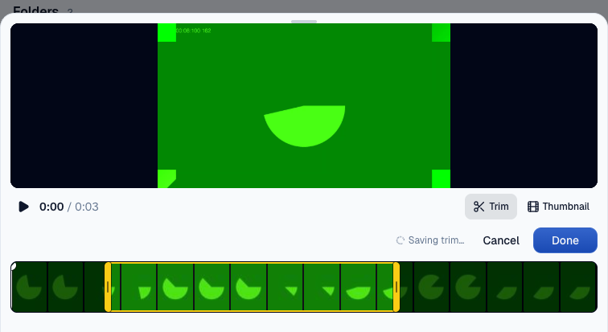
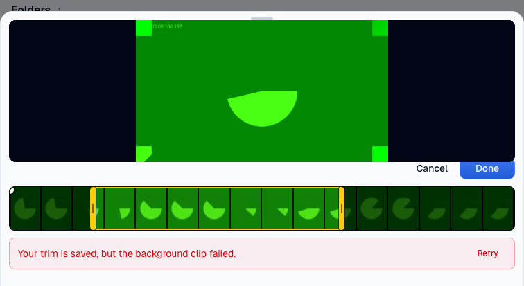
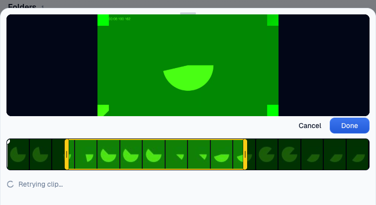
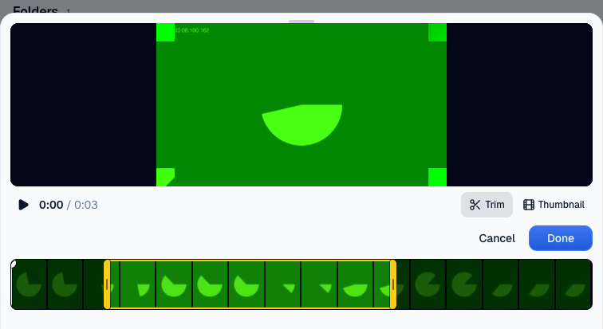
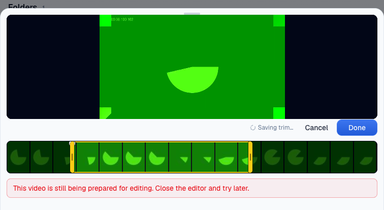

VERIFIED · PASS+NOTES
Independent preview verification, 1 November 2026. Evidence and screenshot audit performed by the verifier who did not write this PR.
Head 856bdadada74afe4d47c00b3dbc34d4d1e67d957
PR 1601 · Issue 1138 · Routing steer. No sign-off.
After preview · Before preview. Screenshots contain only mock data. The temporary fixtures were removed after capture.
Checks
| Target | PASS | Authenticated doctor passed on preview head 856bdadada74afe4d47c00b3dbc34d4d1e67d957. |
| Dead clip notice | PASS | The same mock seed has no failure notice on PR 1590. PR 1601 shows the expected sentence and Retry. |
| Empty error | PASS | Setting the dead job error to an empty string still shows the notice and Retry. |
| Retry wiring | PASS | The button sends POST /api/actions/videos_retry_clip and receives HTTP 200 with accepted true. A spinner is visible. |
| Same job and trim | PASS | proof-1601-job returns to running. Its trim remains 1–4 seconds, clip_revision remains 7, and rev remains proof-1601-revision-7 when rearmed. |
| Clip completion | PASS | A real Mux clip lands. The job becomes done, the stored clip span is 1–4 seconds, and the notice and spinner disappear. Promotion changes the row rev, as expected. |
| Running clip | PASS | A running job with its next attempt deferred shows no failure notice or Retry after reopening. Existing Saving trim text remains. |
| Account boundary | PASS | The Basic mock account receives HTTP 404 not_found when retrying the Pro mock video. |
| Real save refusals | PASS | Done sends videos_edit. HTTP 404 not_found and HTTP 409 not_ready each show their specific copy with no retry control. |
| Other refusal branches | PASS | Covered by the existing video-edit-modal-save.test.tsx cases. They were not exercised through preview save paths. |
| Targeted tests | PASS | 26 modal tests, 32 clip-job tests, and 2 save-status tests pass. |
| Adjacent behavior | PASS | Library navigation, modal open and cancel, source playback loading, and an ordinary trim save were exercised. |
| Network and console | NOTE | Five expected HTTP error console entries. Two library_get 404s occurred while the open Pro modal used the Basic session. The other three were the deliberately refused requests. No unexpected page exception was observed. |
| Fixture setup | NOTE | An uploading-state SQL update was rejected because current_upload_id was absent. It wrote nothing. Done then saved a 1.033–4 second trim and created the second clip. No further clips were requested. |
| Merge routing | STEER | No approval to land and no sign-off. Nothing was merged or pushed to the PR branch. |
Before and after evidence
Before on PR 1590

Main plus the CSS token change, head 2ea76ccb7c46a591359530a8e879272d6eb5869e. The dead clip has no failure notice. The existing Saving trim indicator remains.After on PR 1601

The identical seed shows Your trim is saved, but the background clip failed. and Retry.Dead job with empty error
The failure notice still appears.Retry in progress

Captured immediately after the real button click.Clip landed

The notice and spinner have disappeared.Running job on reopen
No failure notice and no Retry.Save refusal for a missing video
The real save action returns not_found. There is no retry control.Save refusal for an unavailable source

The real save action returns not_ready. There is no retry control.Commands and captured answers
Preview writes
Preview writes
Only the dedicated mock node asset:user:user_01M3PV8N4H36ZZPHGXFXWCQPM3:video:proof-1601-20261101 and its jobs were changed.
PR 1590
1. Inserted one workspace_nodes row, one videos row borrowing the existing synthetic Mux source, and one dead mux_clip job using seed.sql.
2. Deleted those three rows using cleanup-before.sql. No pre-existing fixture was changed.
PR 1601
1. Inserted the same three rows using seed.sql, with a saved 1–4 second trim and clip revision 7.
2. Set the dead job error to an empty string.
3. Clicked Retry. The application rearmed the job, created clip cIg8tPSmmoKACiKNCflk9pALuRChEERmwsrESkbVv1o, and promoted it when ready.
4. Cleared the video's clip fields and set the job to running with not_before 1999999999999 for the running-state check.
5. Attempted to set delivery to uploading without current_upload_id. The database rejected this statement. It made no write.
6. Done then successfully saved a 1.033–4 second trim, changed clip revision to 8, created clip RZmkDlMLVZ3WRQXH8l7RkICCXbskbmhOfPJXqctmJSc, and queued the old clip for discard through normal application behavior.
7. Set the clip job to dead with Verification pause, then to done with Verification paused while testing refusals.
8. Changed the isolated node type to image to make videos_edit refuse it, then restored video.
9. Set the isolated video to stalled, added Verification unavailable source, and cleared its source and clip identifiers to reach not_ready. Both refusal requests made no accepted edit.
10. Deleted the isolated job, video and node. Inserted deduplicated discard jobs for the two clips created by this run. The borrowed source asset was never queued for discard.
Authenticated login and ordinary preview reads also produced their normal application telemetry. There were no production or staging writes.
Waved through: none. No required evidence item was waived. Other refusal variants use the test evidence allowed by the brief. No red-to-green test was required for this enhancement.